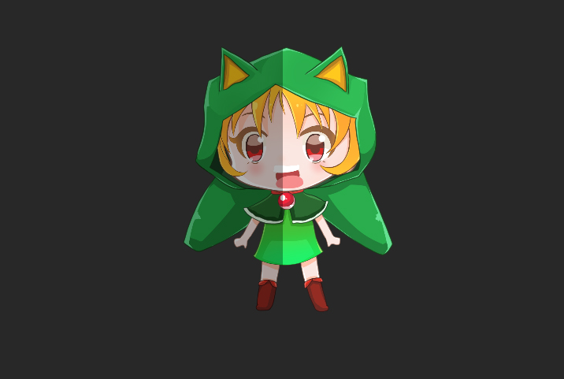

AnyPortrait > マニュアル > 「Linear Color Space」と「Asset」設定
「Linear Color Space」と「Asset」設定
1.0.1

AnyPortraitでイメージアセットの設定を変更することができます。
1. Color Space : プロジェクトのレンダリング設定に従って、画像の「Color Space(色空間)」設定を変更します。 「Gamma」または「Linear」を選択できます。
2. Compression : イメージの圧縮方法を設定することができます。3段階の圧縮と非圧縮を提供します。
3. Use Mipmap : 「Mip Map」を適用するかどうかを設定します。
1. Color Spaceの変更

「Player Settings」でプロジェクトの「Color Space」を変更することができます。
「Color Space」の詳細については、関連ページを参照してください。

「Color Space」によっては、レンダリングの結果が異なります。
したがって、プロジェクトの「Color Space」に合わせて設定を変更する必要があります。

すべての画像の「Color Space」を変更します。

「Bake」ダイアログで、「Color Space」を選択します。
2.画像圧縮方式の変更
イメージの圧縮方法を変更することができます。
ほとんどの場合、イメージを圧縮して使用することをお勧めしますが、
イメージが2Dキャラクタを対象とする場合、非圧縮メソッドで得られた高品質のイメージが必要になることがあります。
それは2Dゲームなので、「Mipmap(ミップマップ)」は必要ないかもしれません。
「Mipmap」をオフにすることをお勧めします。